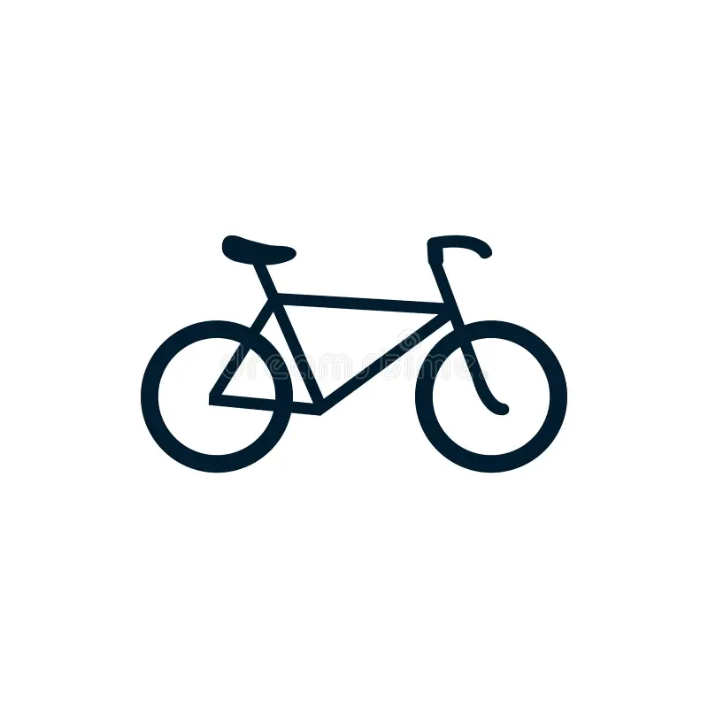

My Autobiography
About Me
Born on October 14,2005 living in Ipet, Sudipen, La union and now currently a College 3rd year student in ISPSC Tagudin Campus living a normal life.One of my idol is Justin Nabunturan
My Hobbies

Dream
There's a lot of dream that i wanted to become but I still doesn't know what will happen but let see.. and also I wanted to become a famous person like Justin Nabunturan.
Contact